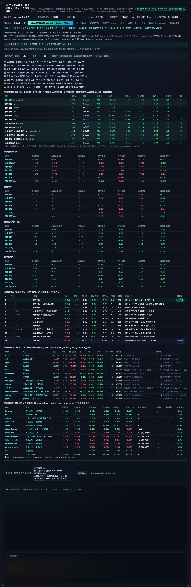
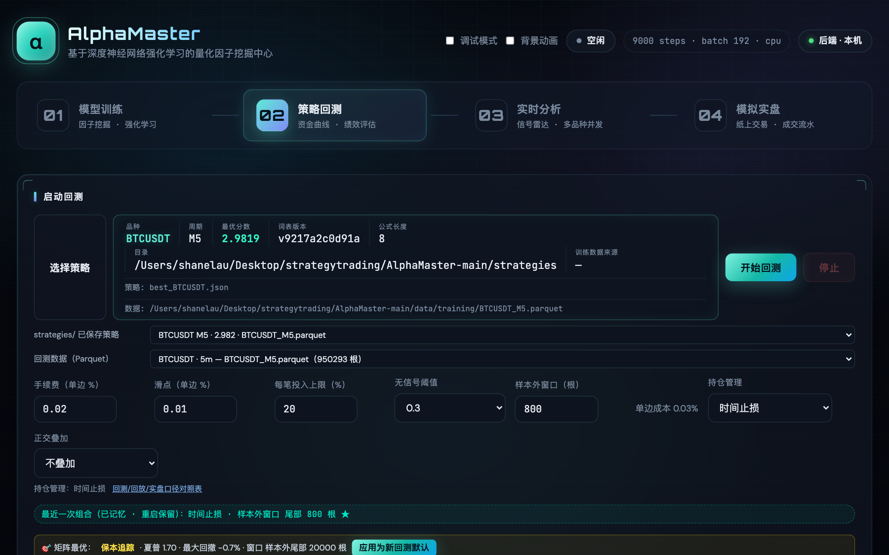
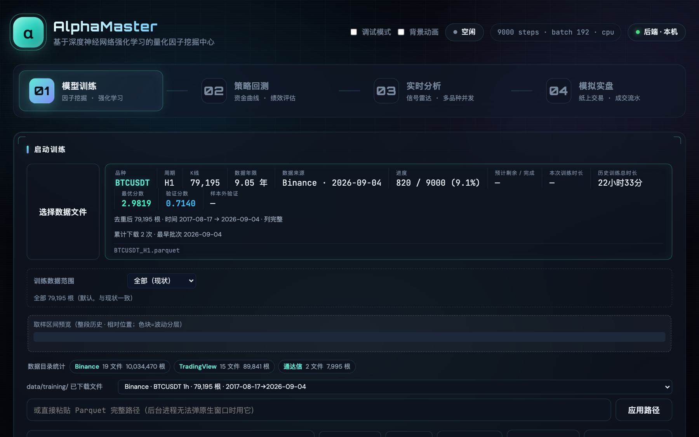
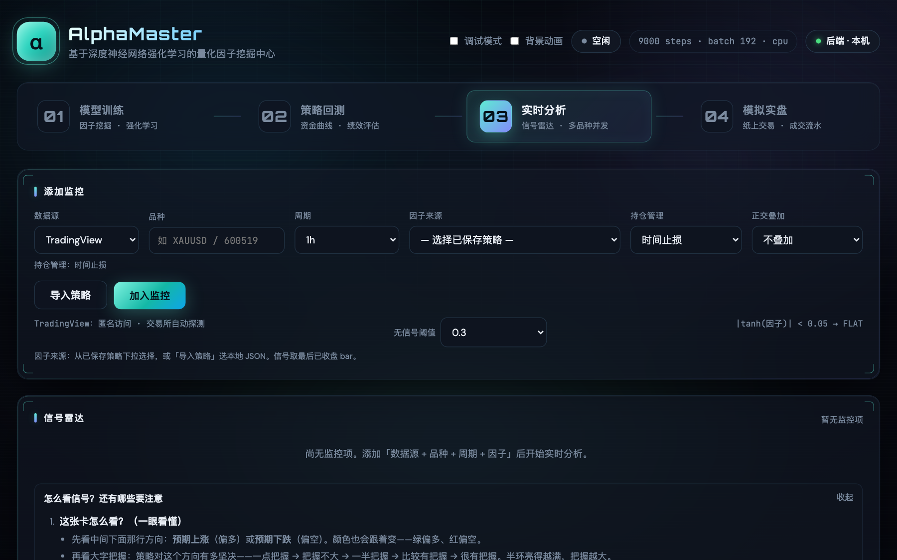
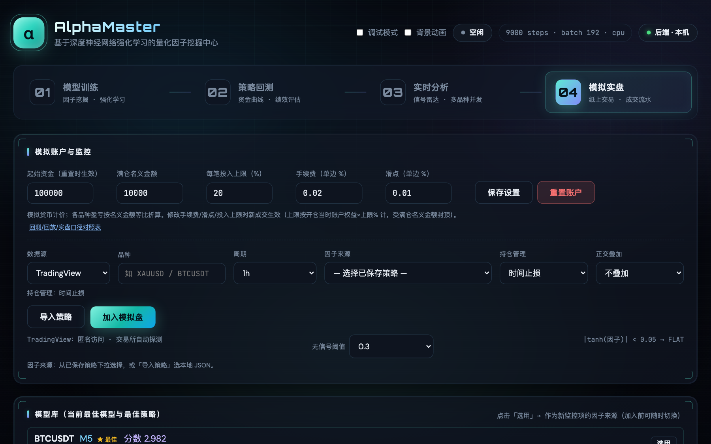

AlphaMaster · 量化因子挖掘中心 · Web 界面渲染部署
基于深度强化学习的可解释因子挖掘
FACTOR DISCOVERY · BACKTEST · REALTIME · PAPER TRADING
训练（01）/ 回测（02）/ 实时分析（03）/ 模拟实盘（04）四合一的本地量化控制台。下方为当前版本的界面真实渲染截图（数据来自本机实盘后端），以及最近一次「三轴联合回测」的静态数据页。
🎛 三轴联合回测（本版新合并）
把 持仓正交组合矩阵、阈值敏感性·观望带、⚖ A/B·持仓方案对比 三个面板合并为一个：22 个正交组合 × 上限% 档 × 无信号阈值档一次跑完全网格，给出 全局最优 / 每档阈值最优 / 每档上限最优 + 可排序全网格排名，并按「上限 × 阈值」切片切换 7×7 矩阵与帕累托。
🧮 三根可调轴
每笔投入上限（%）、无信号阈值（|tanh(因子)|<t → 观望 FLAT）、持仓管理方案（含正交叠加）在同一份因子、同一离散撮合引擎下交叉扫描——上限=缩仓控回撤，阈值=观望带提单笔质量。
⚙️ 同口径引擎
非 signal 方案走 web/paper_replay 离散撮合（与模拟实盘逐笔同构）；signal 与训练连续口径一致；成本/窗口/regime 分层抽样全部可选。
界面渲染 图源：本机实时后端渲染输出（headless Chromium 1440px · 训练页 01 / 回测页 02 / 实时分析 03 / 模拟实盘 04）

回测页 · 🎛 三轴联合回测面板展开态：🎯 全局最优 + 每档阈值/每档上限最优 + 264 行全网格排名（22 组合 × 3 档上限 × 4 档阈值）

回测页 · 启动回测每笔投入上限 20% / 无信号阈值 0.3 / 持仓管理「时间止损」+ 正交叠加；下方成本敏感性与双口径对比

01 模型训练RL 因子挖掘 · 训练范围（tail/spread）· 曲线与最优公式

03 实时分析行情接入（Binance/TradingView…）· 信号与观望带角标

04 模拟实盘离散撮合闭环 · DD 熔断 · 飞书告警 · 历史回放对比
📌 说明：GitHub Pages 仅托管静态文件，无法运行 AlphaMaster 的 Python 后端。
界面副本为前端静态外壳（真实页面骨架、交互框架），不连实时数据；数据内容请看
三轴数据页 或在本机启动
run_web.py 获得完整功能。渲染截图与数据快照随每次版本更新同步刷新。